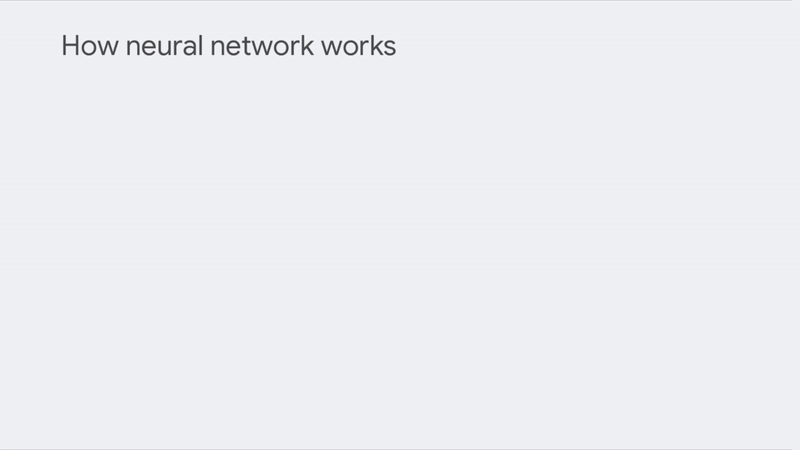
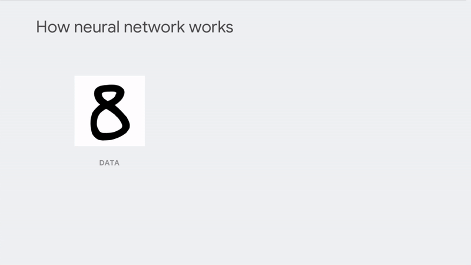
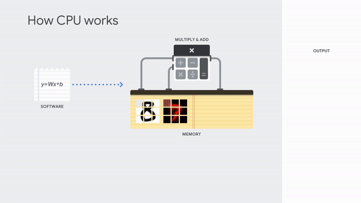
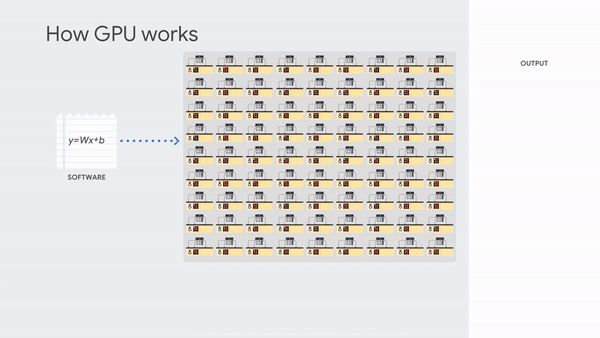
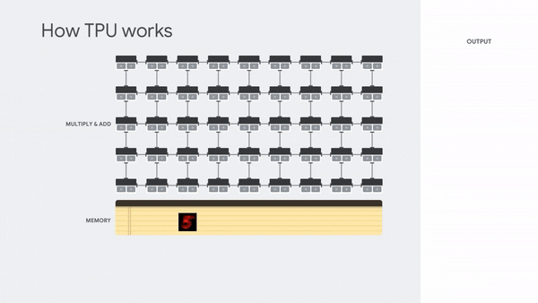

<!DOCTYPE html>


<html lang="zh-CN">
  

    <head>
      <meta charset="utf-8" />
        
      <meta
        name="viewport"
        content="width=device-width, initial-scale=1, maximum-scale=1"
      />
      <title>深度学习与CPU、GPU和TPU |  墨冰的博客</title>
  <meta name="generator" content="hexo-theme-ayer">
      
      <link rel="shortcut icon" href="/favicon.ico" />
       
<link rel="stylesheet" href="/dist/main.css">

      <link
        rel="stylesheet"
        href="https://cdn.jsdelivr.net/gh/Shen-Yu/cdn/css/remixicon.min.css"
      />
      
<link rel="stylesheet" href="/css/custom.css">
 
      <script src="https://cdn.jsdelivr.net/npm/pace-js@1.0.2/pace.min.js"></script>
       
 

      <link
        rel="stylesheet"
        href="https://cdn.jsdelivr.net/npm/@sweetalert2/theme-bulma@5.0.1/bulma.min.css"
      />
      <script src="https://cdn.jsdelivr.net/npm/sweetalert2@11.0.19/dist/sweetalert2.min.js"></script>

      <!-- mermaid -->
      
      <style>
        .swal2-styled.swal2-confirm {
          font-size: 1.6rem;
        }
      </style>
    <link href="https://cdn.bootcss.com/KaTeX/0.11.1/katex.min.css" rel="stylesheet" /></head>
  </html>
</html>


<body>
  <div id="app">
    
      
    <main class="content on">
      <section class="outer">
  <article
  id="post-CPUGPUandTPU"
  class="article article-type-post"
  itemscope
  itemprop="blogPost"
  data-scroll-reveal
>
  <div class="article-inner">
    
    <header class="article-header">
       
<h1 class="article-title sea-center" style="border-left:0" itemprop="name">
  深度学习与CPU、GPU和TPU
</h1>
 

      
    </header>
     
    <div class="article-meta">
      <a href="/2020/04/02/CPUGPUandTPU/" class="article-date">
  <time datetime="2020-04-02T12:00:00.000Z" itemprop="datePublished">2020-04-02</time>
</a> 
  <div class="article-category">
    <a class="article-category-link" href="/categories/%E4%B8%87%E5%8D%B7%E4%B9%A6%E4%B8%8E%E4%B8%87%E9%87%8C%E8%B7%AF/">万卷书与万里路</a>
  </div>
  
<div class="word_count">
    <span class="post-time">
        <span class="post-meta-item-icon">
            <i class="ri-quill-pen-line"></i>
            <span class="post-meta-item-text"> 字数统计:</span>
            <span class="post-count">1.7k</span>
        </span>
    </span>

    <span class="post-time">
        &nbsp; | &nbsp;
        <span class="post-meta-item-icon">
            <i class="ri-book-open-line"></i>
            <span class="post-meta-item-text"> 阅读时长≈</span>
            <span class="post-count">6 分钟</span>
        </span>
    </span>
</div>
 
    </div>
      
    <div class="tocbot"></div>


  
    <div class="article-entry" itemprop="articleBody">
       
  <p><a target="_blank" rel="noopener" href="https://mp.weixin.qq.com/s/J01YnvG682XNbPfDi4uOGQ">本文已首发在大连理工大学创新创业中心公众号</a></p>
<h2 id="简介">简介：</h2>
<p>近些年，深度学习已经广泛应用在各行各业，但是对于深度学习的应用底层并没有太多的了解，比如说经常会有人问：CPU，GPU和TPU有什么区别？为什么使用GPU训练比CPU训练会快很多呢？本文就来从这几个硬件的结构来回答这些问题。 <span id="more"></span> ## 神经网路是什么？ 这里我们使用单层神经网络和识别手写数字图像来举例，如下图所示：<br />
<br />
MNIST数据集的每一个数据是28 x 28灰度像素的网格，可以将其转换为具有784个值的向量（784个像素点的灰度值）。每一条线上对应一个权重值，那么要识别数字“ 8”只需将向量值乘上线上的权重值。求和后得出的值表示图像和形状“ 8”之间的相似性。<br />
<br />
假如我们需要识别一个输入究竟属于哪个类，那么我们就需要将输入的数据（左侧的黑色点）乘上每个类的模型（中间红点），相加得出相似度（右侧），最终按照相似度排序，取最高结果即是最可能的答案。<br />
那么总结一下，在神经网络计算中需要在数据和参数之间进行大量的乘法和加法运算，需要区分的类数量越多，神经网路越深越宽那么所需的计算量就越大。</p>
<h2 id="全能的cpu">全能的CPU</h2>
<p>当前的CPU大都是基于冯·诺依曼（Von Neumann）架构的通用处理器。这种架构的处理器具有极大的灵活性，但与此同时，它在执行每种任务时效率都不是最高的。<br />
为了实现多种多样的任务，CPU需要在每一次计算前从缓存中取出指令和数据，并按照取出的指令选择计算方式进行计算，最后将计算结果存储到缓存中。这种执行方式使CPU可以满足几乎所有任务的计算需求，但与此同时CPU工作的大部分时间都浪费在存取操作中，从而大幅降低了效率。<br />
在神经网络计算中，CPU需要依次计算每条边的权重和，在最后将结果求和，这显然是很慢的一个过程。下图展示了CPU进行神经网络推断的计算过程。<br />
</p>
<h2 id="并行的gpu">并行的GPU</h2>
<p>在介绍GPU之前，我们首先来想一下GPU是用来完成什么任务的？<br />
我们的电脑现在的分辨率大都为1920*1080 60Hz，那么一秒钟GPU需要计算1920*1080*24bit(RGB各1字节)*60Hz = 2.78Gbit数据，这无疑需要巨大的计算。但是显示的计算有一个特点，同一帧的图像像素之间几乎没有计算的先后依赖。于是GPU就使用了一个简单的策略：在一个处理器中包含大量的算术逻辑单元（ALU），例如RTX2080就包含了2944个可编程算术逻辑单元。这些算术单元在接受到调度后进行并行计算，将一个巨大计算分成一个个小计算，大大提高了计算速度并降低了等待时延。<br />
在神经网络计算中也是如此，每条边的相似度、多条输入数据都可以进行并行处理，下图展示了单层神经网络中多个输入并行推断的过程。<br />
<br />
由于大量算数逻辑单元的并行工作，GPU在神经网络计算时常常可以比CPU快几个数量级，因此当前大多使用GPU作为神经网络的驱动硬件。<br />
但是，由于GPU的原有用途是进行显示输出，而显示输出中的微小的错误很难引起人们的察觉，因此GPU在检错和纠错方面并没有太多严格的设计，但神经网络在学习使用的随机梯度下降算法对精度的要求较高的。计算产生的错误可能会导致训练精度的损失。与之相对的，也有另一种声音认为随机的错误会提高模型的性能，例如谷歌的Dropout算法就通过随机制造失效边来提高模型性能。<br />
由于GPU仍然是通用处理器，它仅仅是将计算的单元变多，依然没有脱离使用缓存来读取和存储中间结果的计算方式。这意味着GPU依然没有摆脱冯诺依曼瓶颈（von Neumann bottleneck），不能成为神经网络计算的最佳驱动硬件。</p>
<h2 id="专为神经网络射界的tpu">专为神经网络射界的TPU</h2>
<p>由于当前的神经网络专用处理器并没有统一的标准，因此这里使用谷歌的张量处理器（TPU）进行举例。<br />
在介绍TPU之前，需要先介绍一下谷歌TensorFlow，TensorFlow不是一个严格的“神经网络”库。它的思路是将计算表示为一个数据流图，然后将数据引入，让数据（张量）在计算图中流动和计算并最终获得输出。如下图所示：<br />
<br />
在计算图中，每个节点负责单一的计算步骤，各计算图之间互相并行。这也是谷歌TPU的设计思路：将每一个计算专有化，一个计算单元在初始化时加载模型的参数，使其成为一个专有的计算节点，大量的计算节点组成计算网络，单个计算的结果并不会存入内存，而是直接传入到下一个计算单元中，直至最后得出计算结果。如下图所示。<br />
<br />
无内存读写的设计避免的大量存取带来的时间浪费和能量消耗，从而使神经网络的计算速度大大提升。</p>
<h2 id="结语">结语</h2>
<p>当前国内许多厂商也发布了各种神经网络的专用处理器，如阿里巴巴的“含光”，独角兽企业“寒武纪”等，这些芯片的设计思路也不尽相同。这里使用谷歌的TPU做介绍仅仅是由于其有较为完整的实现资料。有兴趣的同学也可以深入研究这些厂商的产品。</p>
<h2 id="参考">参考</h2>
<ul>
<li>Gal, Yarin, and Zoubin Ghahramani. "Dropout as a bayesian approximation: Representing model uncertainty in deep learning." international conference on machine learning. 2016.</li>
<li>Schmidhuber, Jürgen. "Deep learning in neural networks: An overview." Neural networks 61 (2015): 85-117.</li>
<li>https://cloud.google.com/blog/products/ai-machine-learning/what-makes-tpus-fine-tuned-for-deep-learning</li>
<li>https://www.nvidia.cn/geforce/graphics-cards/rtx-2080/</li>
<li>https://tensorflow.google.cn/</li>
<li>http://www.cambricon.com/</li>
<li>https://developer.aliyun.com/article/720435</li>
<li>https://tpudemo.com</li>
<li>https://zh.wikipedia.org/wiki/%E5%86%AF%C2%B7%E8%AF%BA%E4%BC%8A%E6%9B%BC%E7%BB%93%E6%9E%84</li>
<li>https://en.wikipedia.org/wiki/Von_Neumann_architecture#Von_Neumann_bottleneck</li>
</ul>
 
      <!-- reward -->
      
    </div>
    

    <!-- copyright -->
    
    <div class="declare">
      <ul class="post-copyright">
        <li>
          <i class="ri-copyright-line"></i>
          <strong>版权声明： </strong>
          
          本博客所有文章除特别声明外，著作权归作者所有。转载请注明出处！
          
        </li>
      </ul>
    </div>
    
    <footer class="article-footer">
       
<div class="share-btn">
      <span class="share-sns share-outer">
        <i class="ri-share-forward-line"></i>
        分享
      </span>
      <div class="share-wrap">
        <i class="arrow"></i>
        <div class="share-icons">
          
          <a class="weibo share-sns" href="javascript:;" data-type="weibo">
            <i class="ri-weibo-fill"></i>
          </a>
          <a class="weixin share-sns wxFab" href="javascript:;" data-type="weixin">
            <i class="ri-wechat-fill"></i>
          </a>
          <a class="qq share-sns" href="javascript:;" data-type="qq">
            <i class="ri-qq-fill"></i>
          </a>
          <a class="douban share-sns" href="javascript:;" data-type="douban">
            <i class="ri-douban-line"></i>
          </a>
          <!-- <a class="qzone share-sns" href="javascript:;" data-type="qzone">
            <i class="icon icon-qzone"></i>
          </a> -->
          
          <a class="facebook share-sns" href="javascript:;" data-type="facebook">
            <i class="ri-facebook-circle-fill"></i>
          </a>
          <a class="twitter share-sns" href="javascript:;" data-type="twitter">
            <i class="ri-twitter-fill"></i>
          </a>
          <a class="google share-sns" href="javascript:;" data-type="google">
            <i class="ri-google-fill"></i>
          </a>
        </div>
      </div>
</div>

<div class="wx-share-modal">
    <a class="modal-close" href="javascript:;"><i class="ri-close-circle-line"></i></a>
    <p>扫一扫，分享到微信</p>
    <div class="wx-qrcode">
      
    </div>
</div>

<div id="share-mask"></div>  
  <ul class="article-tag-list" itemprop="keywords"><li class="article-tag-list-item"><a class="article-tag-list-link" href="/tags/%E6%B7%B1%E5%BA%A6%E5%AD%A6%E4%B9%A0/" rel="tag">深度学习</a></li></ul>

    </footer>
  </div>

   
  <nav class="article-nav">
    
      <a href="/2020/04/09/%E4%BF%9E%E5%86%9B%E4%BA%A7%E5%93%81%E6%96%B9%E6%B3%95%E8%AE%BA/" class="article-nav-link">
        <strong class="article-nav-caption">上一篇</strong>
        <div class="article-nav-title">
          
            产品方法论-俞军
          
        </div>
      </a>
    
    
      <a href="/2020/03/20/internetcontest/" class="article-nav-link">
        <strong class="article-nav-caption">下一篇</strong>
        <div class="article-nav-title">互联网+ 竞赛培训</div>
      </a>
    
  </nav>

  
   
     
</article>

</section>
      <footer class="footer">
  <div class="outer">
    <ul>
      <li>
        Copyrights &copy;
        2017-2022
        <i class="ri-heart-fill heart_icon"></i> Ink East
      </li>
    </ul>
    <ul>
      <li>
        
      </li>
    </ul>
    <ul>
      <li>
        
        
        <span>
  <span><i class="ri-user-3-fill"></i>访问人数:<span id="busuanzi_value_site_uv"></span></span>
  <span class="division">|</span>
  <span><i class="ri-eye-fill"></i>浏览次数:<span id="busuanzi_value_page_pv"></span></span>
</span>
        
      </li>
    </ul>
    <ul>
      
    </ul>
    <ul>
      
    </ul>
    <ul>
      <li>
        <!-- cnzz统计 -->
        
      </li>
    </ul>
  </div>
</footer>    
    </main>
    <div class="float_btns">
      <div class="totop" id="totop">
  <i class="ri-arrow-up-line"></i>
</div>

<div class="todark" id="todark">
  <i class="ri-moon-line"></i>
</div>

    </div>
    <aside class="sidebar on">
      <button class="navbar-toggle"></button>
<nav class="navbar">
  
  <div class="logo">
    <a href="/"></a>
  </div>
  
  <ul class="nav nav-main">
    
    <li class="nav-item">
      <a class="nav-item-link" href="/">主页</a>
    </li>
    
    <li class="nav-item">
      <a class="nav-item-link" href="/archives">归档</a>
    </li>
    
    <li class="nav-item">
      <a class="nav-item-link" href="/categories">分类</a>
    </li>
    
    <li class="nav-item">
      <a class="nav-item-link" href="/tags">标签</a>
    </li>
    
    <li class="nav-item">
      <a class="nav-item-link" href="/about">关于我</a>
    </li>
    
  </ul>
</nav>
<nav class="navbar navbar-bottom">
  <ul class="nav">
    <li class="nav-item">
      
      <a class="nav-item-link nav-item-search"  title="搜索">
        <i class="ri-search-line"></i>
      </a>
      
      
      <a class="nav-item-link" target="_blank" href="/atom.xml" title="RSS Feed">
        <i class="ri-rss-line"></i>
      </a>
      
    </li>
  </ul>
</nav>
<div class="search-form-wrap">
  <div class="local-search local-search-plugin">
  <input type="search" id="local-search-input" class="local-search-input" placeholder="Search...">
  <div id="local-search-result" class="local-search-result"></div>
</div>
</div>
    </aside>
    <div id="mask"></div>

<!-- #reward -->
<div id="reward">
  <span class="close"><i class="ri-close-line"></i></span>
  <p class="reward-p"><i class="ri-cup-line"></i>请我喝杯咖啡吧~</p>
  <div class="reward-box">
    
    <div class="reward-item">
      
      <span class="reward-type">支付宝</span>
    </div>
    
    
    <div class="reward-item">
      
      <span class="reward-type">微信</span>
    </div>
    
  </div>
</div>
    
<script src="/js/jquery-3.6.0.min.js"></script>
 
<script src="/js/lazyload.min.js"></script>

<!-- Tocbot -->
 
<script src="/js/tocbot.min.js"></script>

<script>
  tocbot.init({
    tocSelector: ".tocbot",
    contentSelector: ".article-entry",
    headingSelector: "h1, h2, h3, h4, h5, h6",
    hasInnerContainers: true,
    scrollSmooth: true,
    scrollContainer: "main",
    positionFixedSelector: ".tocbot",
    positionFixedClass: "is-position-fixed",
    fixedSidebarOffset: "auto",
  });
</script>

<script src="https://cdn.jsdelivr.net/npm/jquery-modal@0.9.2/jquery.modal.min.js"></script>
<link
  rel="stylesheet"
  href="https://cdn.jsdelivr.net/npm/jquery-modal@0.9.2/jquery.modal.min.css"
/>
<script src="https://cdn.jsdelivr.net/npm/justifiedGallery@3.7.0/dist/js/jquery.justifiedGallery.min.js"></script>

<script src="/dist/main.js"></script>

<!-- ImageViewer -->
 <!-- Root element of PhotoSwipe. Must have class pswp. -->
<div class="pswp" tabindex="-1" role="dialog" aria-hidden="true">

    <!-- Background of PhotoSwipe. 
         It's a separate element as animating opacity is faster than rgba(). -->
    <div class="pswp__bg"></div>

    <!-- Slides wrapper with overflow:hidden. -->
    <div class="pswp__scroll-wrap">

        <!-- Container that holds slides. 
            PhotoSwipe keeps only 3 of them in the DOM to save memory.
            Don't modify these 3 pswp__item elements, data is added later on. -->
        <div class="pswp__container">
            <div class="pswp__item"></div>
            <div class="pswp__item"></div>
            <div class="pswp__item"></div>
        </div>

        <!-- Default (PhotoSwipeUI_Default) interface on top of sliding area. Can be changed. -->
        <div class="pswp__ui pswp__ui--hidden">

            <div class="pswp__top-bar">

                <!--  Controls are self-explanatory. Order can be changed. -->

                <div class="pswp__counter"></div>

                <button class="pswp__button pswp__button--close" title="Close (Esc)"></button>

                <button class="pswp__button pswp__button--share" style="display:none" title="Share"></button>

                <button class="pswp__button pswp__button--fs" title="Toggle fullscreen"></button>

                <button class="pswp__button pswp__button--zoom" title="Zoom in/out"></button>

                <!-- Preloader demo http://codepen.io/dimsemenov/pen/yyBWoR -->
                <!-- element will get class pswp__preloader--active when preloader is running -->
                <div class="pswp__preloader">
                    <div class="pswp__preloader__icn">
                        <div class="pswp__preloader__cut">
                            <div class="pswp__preloader__donut"></div>
                        </div>
                    </div>
                </div>
            </div>

            <div class="pswp__share-modal pswp__share-modal--hidden pswp__single-tap">
                <div class="pswp__share-tooltip"></div>
            </div>

            <button class="pswp__button pswp__button--arrow--left" title="Previous (arrow left)">
            </button>

            <button class="pswp__button pswp__button--arrow--right" title="Next (arrow right)">
            </button>

            <div class="pswp__caption">
                <div class="pswp__caption__center"></div>
            </div>

        </div>

    </div>

</div>

<link rel="stylesheet" href="https://cdn.jsdelivr.net/npm/photoswipe@4.1.3/dist/photoswipe.min.css">
<link rel="stylesheet" href="https://cdn.jsdelivr.net/npm/photoswipe@4.1.3/dist/default-skin/default-skin.min.css">
<script src="https://cdn.jsdelivr.net/npm/photoswipe@4.1.3/dist/photoswipe.min.js"></script>
<script src="https://cdn.jsdelivr.net/npm/photoswipe@4.1.3/dist/photoswipe-ui-default.min.js"></script>

<script>
    function viewer_init() {
        let pswpElement = document.querySelectorAll('.pswp')[0];
        let $imgArr = document.querySelectorAll(('.article-entry img:not(.reward-img)'))

        $imgArr.forEach(($em, i) => {
            $em.onclick = () => {
                // slider展开状态
                // todo: 这样不好，后面改成状态
                if (document.querySelector('.left-col.show')) return
                let items = []
                $imgArr.forEach(($em2, i2) => {
                    let img = $em2.getAttribute('data-idx', i2)
                    let src = $em2.getAttribute('data-target') || $em2.getAttribute('src')
                    let title = $em2.getAttribute('alt')
                    // 获得原图尺寸
                    const image = new Image()
                    image.src = src
                    items.push({
                        src: src,
                        w: image.width || $em2.width,
                        h: image.height || $em2.height,
                        title: title
                    })
                })
                var gallery = new PhotoSwipe(pswpElement, PhotoSwipeUI_Default, items, {
                    index: parseInt(i)
                });
                gallery.init()
            }
        })
    }
    viewer_init()
</script> 
<!-- MathJax -->

<!-- Katex -->
 
    
        <link rel="stylesheet" href="https://cdn.jsdelivr.net/npm/katex@0.11.1/dist/katex.min.css">
        <script src="https://cdn.jsdelivr.net/npm/katex@0.11.1/dist/katex.min.js"></script>
        <script src="https://cdn.jsdelivr.net/npm/katex@0.11.1/dist/contrib/auto-render.min.js"></script>
        
    
 
<!-- busuanzi  -->
 
<script src="/js/busuanzi-2.3.pure.min.js"></script>
 
<!-- ClickLove -->

<!-- ClickBoom1 -->

<!-- ClickBoom2 -->

<!-- CodeCopy -->
 
<link rel="stylesheet" href="/css/clipboard.css">
 <script src="https://cdn.jsdelivr.net/npm/clipboard@2/dist/clipboard.min.js"></script>
<script>
  function wait(callback, seconds) {
    var timelag = null;
    timelag = window.setTimeout(callback, seconds);
  }
  !function (e, t, a) {
    var initCopyCode = function(){
      var copyHtml = '';
      copyHtml += '<button class="btn-copy" data-clipboard-snippet="">';
      copyHtml += '<i class="ri-file-copy-2-line"></i><span>COPY</span>';
      copyHtml += '</button>';
      $(".highlight .code pre").before(copyHtml);
      $(".article pre code").before(copyHtml);
      var clipboard = new ClipboardJS('.btn-copy', {
        target: function(trigger) {
          return trigger.nextElementSibling;
        }
      });
      clipboard.on('success', function(e) {
        let $btn = $(e.trigger);
        $btn.addClass('copied');
        let $icon = $($btn.find('i'));
        $icon.removeClass('ri-file-copy-2-line');
        $icon.addClass('ri-checkbox-circle-line');
        let $span = $($btn.find('span'));
        $span[0].innerText = 'COPIED';
        
        wait(function () { // 等待两秒钟后恢复
          $icon.removeClass('ri-checkbox-circle-line');
          $icon.addClass('ri-file-copy-2-line');
          $span[0].innerText = 'COPY';
        }, 2000);
      });
      clipboard.on('error', function(e) {
        e.clearSelection();
        let $btn = $(e.trigger);
        $btn.addClass('copy-failed');
        let $icon = $($btn.find('i'));
        $icon.removeClass('ri-file-copy-2-line');
        $icon.addClass('ri-time-line');
        let $span = $($btn.find('span'));
        $span[0].innerText = 'COPY FAILED';
        
        wait(function () { // 等待两秒钟后恢复
          $icon.removeClass('ri-time-line');
          $icon.addClass('ri-file-copy-2-line');
          $span[0].innerText = 'COPY';
        }, 2000);
      });
    }
    initCopyCode();
  }(window, document);
</script>
 
<!-- CanvasBackground -->

<script>
  if (window.mermaid) {
    mermaid.initialize({ theme: "forest" });
  }
</script>


    
    <div id="music">
    
    
    
    <iframe frameborder="no" border="1" marginwidth="0" marginheight="0" width="200" height="52"
        src="//music.163.com/outchain/player?type=2&id=1332121708&auto=1&height=32"></iframe>
</div>

<style>
    #music {
        position: fixed;
        right: 15px;
        bottom: 0;
        z-index: 998;
    }
</style>
    
    

  </div>
</body>

</html>